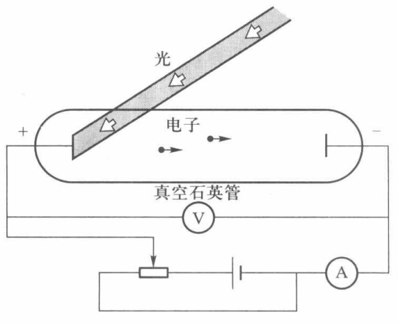
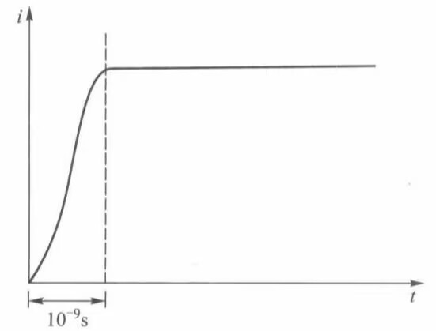
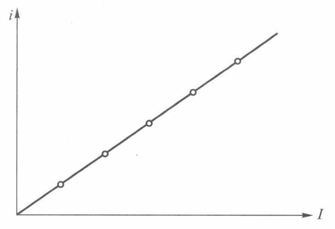
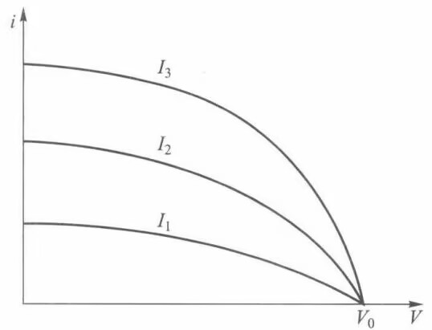
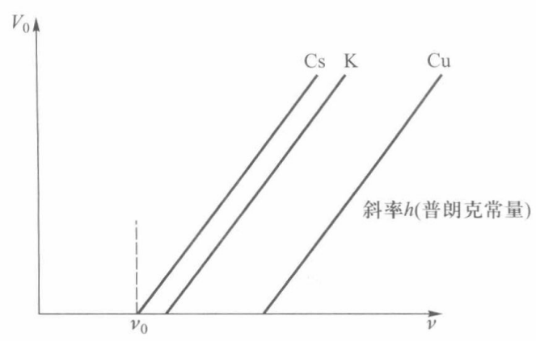
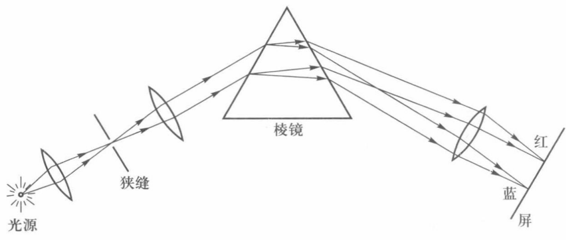
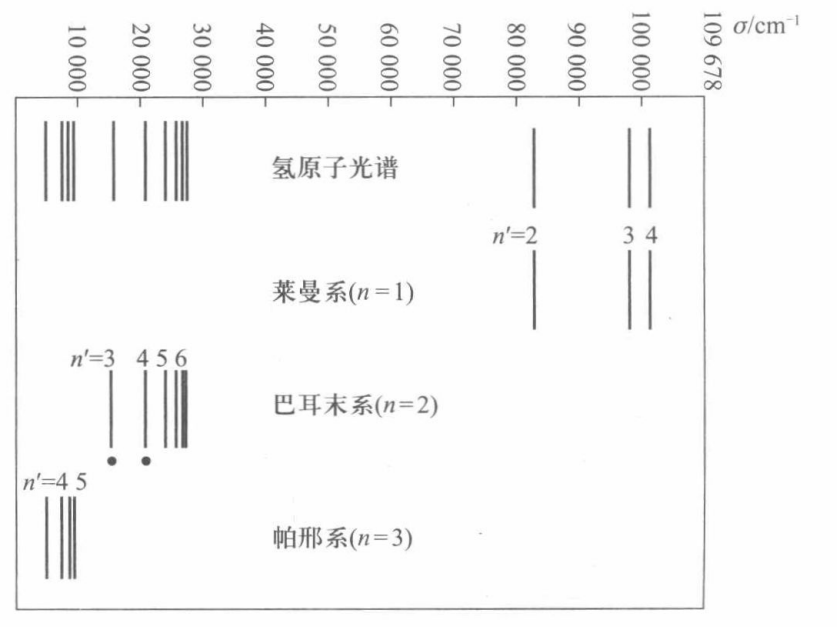
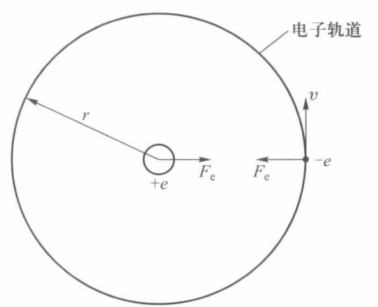

1900年，M. Plank发表了著名的量子假说.
1887年，H. R. Hertz在用莱顿瓶放电的实验中，发现电磁波，并确定其传播速度等于光速.
Hertz的实验使Maxwell的电磁波理论得到全部验证.
正是在这个实验中，Hertz注意到：当紫外线照在火花隙的负极上，放电就会比较容易发生，这是光电效应的早期征兆.
次年，W. Hallwachs对此现象作了进一步的研究，发现清洁而绝缘的锌板在紫外线照射下获得正电荷，而带负电的板在光照射下失去其负电荷.
1900年，P. Lenard实验证明：金属在紫外线照射下发射电子.
过了两年，他进一步发现，光电效应的实验规律不能用波动说解释.
1950年，爱因斯坦提出光量子假说，并用以解释光电效应.
观察光电效应的实验装置如图所示：

单色光投射到作为正极的金属表面，引起光电子的逸出.
在另一端的电极上加负电压（减速势）\(V\)，其大小是电子能量的直接量度.
若假定电子从正极发射出来的最大动能为\(\frac{1}{2}mv_m^2\)，则当\(eV = eV_0 = \frac{1}{2}mv_m^2\)时，没有一个电子能够达到负极，于是电流\(i = 0\).
\(V_0\)被称为遏止电压.
初看起来，光电效应极易理解，但仔细考察实验规律，就发现大有问题.
实验结果表明：
1、当光的强度\(I\)与频率\(\nu\)一定时，光电流\(i\)与时间\(t\)的关系如图所示：

当光照射到金属表面时，电流几乎同时（\(\lt 1\text{ns}\)）产生.
2、当减速势\(V\)与光的频率\(\nu\)固定时，光电流\(i\)与光强\(I\)成正比，即单位时间内逸出的电子数目正比于光强度，如图所示：

3、光的强度\(I\)与频率\(\nu\)固定时，光电流\(i\)随减速势\(V\)增加而减小，如图所示：

可见，\(\nu\)一定时，对不同\(I\)，有相同的遏止电压\(V_0\).
\(V = V_0\)时，\(i = 0\)，那时最大能量的电子都被阻止到静止（\(V\)较小时，只是低能电子被阻止）.
这表明：光电子的最大能量与光强\(I\)无关.
4、对特定表面，遏止电压\(V_0\)依赖于光的频率而与光的强度\(I\)无关，从\(B\)可知：与\(i\)也无关.
对金属铯（Cs）、钾（K）、铜（Cu），都分别有非常确定的阈频率\(\nu_0\).
入射光的频率必须超过此阈值，才能产生光电流，否则，不论光强\(I\)多大，都无光电流\(i\)，如图所示：

对于大多数金属而言，\(\nu_0\)处于紫外区.
因典型的\(V_0\)约为几伏，发出的光电子的动能都在几个\(eV\).
由上图可知，\(\nu = \nu_0\)时，\(V_0 = 0\)，即不必外加减速电压，电子都跑不出来.
而\(\nu\gt \nu_0\)时，遏止电压\(V_0\)也增大，这表明光电子的最大能量与\(\nu\)有关.
经典物理认为，光是一种波动，当其照在电子上时，电子就能得到能量.
当电子集聚的能量达到一定程度时，电子就能脱离原子的束缚而逸出.
那么，光需要照射多少时间才能使电子达到这样的能量呢？
1905年，爱因斯坦发展了普朗克的量子说.
普朗克在解释黑体辐射时假定，物质振子的能量是量子化的，光以不连续方式从光源发出，但仍以波的方式传播.
爱因斯坦在1905年所发表的三篇划时代的论文中的一篇《光的产生和转化的一个启发性观点》中明确提出：“按通常的想法，光的能量是连续地分布于光传播所经过的空间，当人们试图解释光电效应时，这种想法遇到了极大的困难”.
于是，他进一步假定，光的能量也是量子化的，光在空间的传播正像粒子那样运动.
这种粒子后来被称为光量子和光子.
爱因斯坦用光量子假说成功解释了光电效应.
按照爱因斯坦的观点，当光射到金属表面时，能量为\(h\nu\)的光子被电子吸收.
电子将这部分能量的一部分用来克服金属表面对它的束缚，另一部分就是电子离开金属表面后的动能.
这一能量关系可写为：
即：光子的能量\(h\nu\)减去电子在金属中的结合能（脱出功）\(\Phi\)等于电子的最大动能.
光谱是光的频率成分和强度成分的关系图，是研究原子结构的重要途径之一.
牛顿早在1704年就说过：若要了解物质的内部情况，只要看其光谱就可以了.
光谱是用光谱仪测量的.
光谱仪的种类繁多，但其基本结构原理却几乎都一样，大致由三部分组成：
下图为棱镜光谱仪的原理图：

不同的光源具有不同的光谱.
若用氢灯作为一个光源，那么发出的光就是氢光，在光谱仪中测得的便是氢的光谱，如图所示：

[注]图中最上面的数字为波数\(\sigma = 1/\lambda\).
氢灯：以氢气作为发光介质的气体放电光源.
氢光：氢原子发生能级跃迁时发射的电磁辐射.
图中的谱线数目似乎不一致？
1885年，人们从光谱仪中观察到的氢光谱线已有14条.
同年，J. J. Balmer在对这些谱线进行分析研究后，提出了一个经验公式，依次可计算可见光区的谱线波数：
根据这个公式算得的波长数值在实验误差范围内与测得的数值完全一致.
Balmer公式所表达的一组谱线（均落在可见光区）称为Balmer系.
1889年，J. R. Rydberg提出了一个普遍的方程：
理论上氢原子具有无数条谱线.
谱线（Spectral Line）的物理意义是：原子在两个确定能级之间发生跃迁时，吸收或发射特定频率的光子，在光谱中形成的谱线.
理想氢原子模型中，氢原子具有无穷多个束缚态能级，因此理论上也具有无穷多条谱线.
氢的所有谱线都可用这个方程表示.
式中\(n = 1,2,3,\cdots\)，对于每一个\(n\)，有\(n' = n+1,~n+2,~n+3,\cdots\)构成一个谱线系，例如：
由Rydberg公式可知，氢的任意谱线都可以表达为两个光谱项之差，氢光谱是各种光谱项差的综合.
玻尔的氢原子理论是分三步完成的：
玻尔认为，氢原子中的一个电子绕原子核作圆周运动（经典轨道），并作一个硬性的规定：
电子只能处于一些分立的轨道上，它只能在这些轨道上绕核转动，且不产生电磁辐射.
这就是玻尔的定态条件.
如图所示，质量为\(m_e\)的电子绕质子作半径为\(r\)的圆周运动.

按经典力学，电子受到的向心力为：
$$F = m_e\frac{v^2}{r}$$这个力只能由质子与电子间的库伦引力来提供，即：
$$\frac{1}{4\pi\varepsilon_0}\frac{e^2}{r^2} = \frac{m_ev^2}{r}$$由此得到电子在圆周运动中的能量表达式：
电子作圆周运动的频率为：
按照玻尔的观点，电子在定态轨道运动，不会发生电磁辐射，因此就不会损耗能量而落入核内.
那么，在什么情况下产生辐射呢？
玻尔假定：当电子从一个定态轨道跃迁到另一个定态轨道时，会以电磁波的形式放出（或吸收）能量\(h\nu\)（即光子能量\(E\)），其值由能级差决定：
$$h\nu = E_{n'} - E_n$$这就是玻尔提出的频率条件，又称辐射条件.
玻尔在此将普朗克常量引入了原子领域.
定态，即无实质运动；实质运动只发生在定态之间.
一旦写成这样的形式，Rydberg公式就得到了解释：它代表电子从定态\(n'\)（能量为\(E_{n'}\)）跃迁到\(n\)（能量为\(E_n\)）时释放的能量，相应的波长为\(\lambda\)，频率为\(\nu\).
相应波数\(\sigma\)可表示为：
$$\sigma\equiv \frac{1}{\lambda} = \frac{1}{hc}(E_{n'} - E_n)$$\(n\)只能取整数，轨道是分立的.
目前的结果并未带来惊人的成就，因为\(r_n\)无法从实验中确定，\(R\)仍旧是一个经验常量.
将Rydberg公式改写为：
\(n\)很大时，考虑两个相邻\(n\)之间的跃迁（\(n' - n = 1\)），频率：
$$\nu \approx Rc\frac{2n}{n^4} = \frac{2Rc}{n^3}$$根据对应原理的准则，它应该与经典关系式一致，即：
$$\frac{2Rc}{n^3} = \frac{1}{2\pi}\sqrt{\frac{1}{4\pi\varepsilon_0 m_e r^3}}$$它应该与氢原子中与定态\(n\)相应的电子轨道半径一致，即：
$$\sqrt[\uproot{16}3]{\frac{1}{4\pi\varepsilon_0}\frac{e^2}{16\pi^2R^2c^3m_e}}\cdot n^2 = \frac{1}{4\pi\varepsilon_0}\frac{e^2}{2Rhc}n^2$$于是，可以得到Rydberg常量的表达式：
现在，Rydberg常量不再是经验常量了，它已经由若干基本常量（\(e,~m,~h,c\)）组合而成，可以精确算出了.
将Rydberg常量代入氢原子中与定态\(n\)相应的电子轨道半径，得到电子轨道半径：
将Rydberg常量代入式，可得电子在这个体系中的能量表达式：
根据经典理论，电子的角动量应该为：
$$L = m_evr = m_e\sqrt{\frac{e^2}{4\pi\varepsilon_0 m_er}}\cdot r = \sqrt{\frac{m_ee^2r}{4\pi\varepsilon_0}}$$[注]上述式子都是在\(n\)很大的情况下导出的，但是我们假定它们对所有的\(n\)都成立.
我们已经有了Rydberg常量与氢原子的能量、半径的表达式，为了进行数值计算，显然，只要将一些基本常量（\(m_e,~e,~\hbar,\cdots\)）代入即可.
但这样做既麻烦又缺乏物理意义，下面介绍一种简便的数值计算法.
引入组合常量（其物理意义讲逐步清楚）：
$$\hbar c = 197~\text{fm}\cdot\text{MeV} = 197~\text{nm}\cdot\text{eV}$$ $$e^2/4\pi\varepsilon_0 = 1.44~\text{fm}\cdot\text{MeV} = 1.44~\text{nm}\cdot\text{eV}$$ $$m_ec^2 = 0.511~\text{MeV} = 511\text{keV}$$第一玻尔半径通常又以\(a_0\)表示，并习惯上就称之为玻尔半径，它也是原子物理中常用的长度单位.
氢原子的能量 $$\because E_n = -\frac{1}{(4\pi\varepsilon_0)^2}\cdot\frac{m_ee^4}{2\hbar^2n^2}$$ $$\begin{align}\therefore E_n &= -\left(\frac{e^2}{4\pi\varepsilon_0}\right)^2\cdot\left(\frac{1}{\hbar c}\right)^2\cdot\frac{m_ec^2}{2n}\\ &= -\frac{1}{2}m_ec^2\alpha^2\frac{1}{n^2} \end{align}$$若定义氢原子的基态能量为\(0\)，则：
$$E_\infty = \frac{1}{2}mc^2\alpha^2 = 13.6~\text{eV}$$就是将氢原子基态的电子移到无穷远时所需要的能量，即氢原子的电离能.
于是，我们得到了表征原子的两个重要物理量：
其实，从圆轨道运动特点：
$$\frac{m_e v_1^2}{r_1} = \frac{e^2}{4\pi\varepsilon_0 r_1^2}\quad (n=1)$$即可得到：
$$v_1 = \sqrt{\frac{e^2}{4\pi\varepsilon_0 m_e r_1}} = \frac{e^2}{4\pi\varepsilon_0\hbar} = \frac{e^2c}{4\pi\varepsilon_0\hbar c} = \alpha c$$ $$v_n = \frac{\alpha c}{n}$$从此可知：电子在原子中的运动速度时光速的\(1/137\)，速度不大，一般不必考虑相对论修正.
将Rydberg常量改写为：
由此可见：Rydberg常量\(R\)正比于氢原子的电离能\(E_\infty\)，二者通过常数\(hc\)联系起来.
\(n\)很大时，\(E_n\to 0\)，\(r_n\)会变得非常大.
在玻尔的理论发表后不久，A. Sommerfeld便于1916年提出了椭圆轨道的理论.
Sommerfeld在他所提出的理论中主要做了两件事：
下面对相对论修正做一简单介绍.
按照相对论原理，物体在运动时，其质量不再是常量，而与它的运动速度有关，即：
$$m = \frac{m_0}{\sqrt{1-\beta}},\quad \beta\equiv\frac{v}{c}$$\(v\ll c\)时，\(m\approx m_0\)，这表明满足相应原理.
\(v\to c\)时，\(m\gg m_0\).
相对论给出的运动物体动能表达式为：
$$E_k = (m - m_0)c^2 = m_0c^2\left[\frac{1}{\sqrt{1 - \beta^2}} - 1\right]$$下面将用相对论对圆周轨道进行修正：
从能量角度看，能量可写成动能与势能之和，即：
$$E= E_k - \frac{Ze^2}{4\pi\varepsilon_0 r}$$